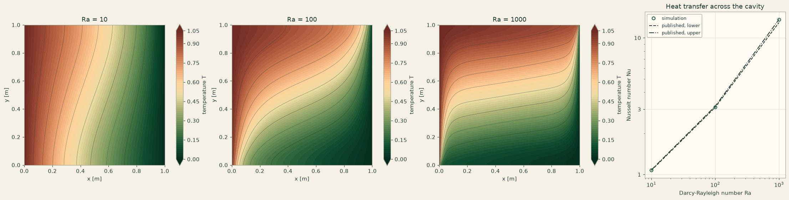
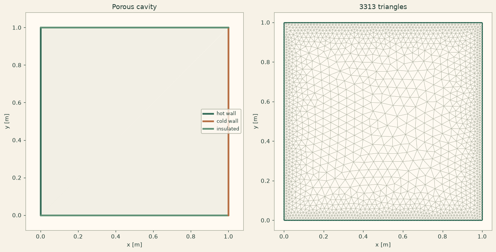

Docs › Examples › Free convection in a porous cavity
Porous media flow · 2D
Free convection in a porous cavity
A square cavity filled with a fluid-saturated porous medium is heated on one side wall and cooled on the other, and the buoyant Darcy flow carries the heat across.
Run locally with OneSimulation. The example downloads are free. Running them requires an activated runtime. Runtime Alpha 0.2.1a7 · CPython 3.13 on macOS (Apple Silicon), Ubuntu 22.04 (x86-64), and Windows x64. Installation and activation · View pilot plans. Scope of the reference checks.

What it computes
OneSimulation reads the cavity from a STEP file, cuts it to its plane and couples stationary Darcy flow and convective heat transport both ways: the Darcy velocity advects the temperature, the temperature drives the flow through Boussinesq buoyancy; a relaxed fixed-point iteration solves the two problems with quadratic triangles graded towards the walls. The script that builds the STEP file comes with the notebook.
What it checks
The Nusselt number is 1.079, 3.111 and 13.65 at Darcy-Rayleigh numbers of 10, 100 and 1000, inside or at the upper end of the published benchmark ranges (1.07-1.08, 3.10-3.16, 12.96-13.64), with hot- and cold-wall fluxes equal to 1e-4.
Geometry
The notebook starts at the import of the CAD file porous_cavity_free_convection.step: STEP (AP242), readable by any CAD program, with the names of the faces that the boundary conditions use. Put it next to the notebook.

The geometry script
The script porous_cavity_free_convection_geometry.py builds the geometry with the CAD objects of OneSimulation and writes the file. Change a dimension there, run it, and run the notebook again.
"""Geometry of the OneSimulation example "Free convection in a porous cavity".
Builds the square porous cavity (side 1, nondimensional) as a thin block with the CAD objects of
OneSimulation and writes porous_cavity_free_convection.step; the model lives on its section. The
faces keep the names x_min (hot wall), x_max (cold wall), y_min and y_max (insulated).
"""
from onesim.cad.d3 import Box
Box(length=1.0, width=1.0, height=0.1).save("porous_cavity_free_convection.step")The notebook
The complete notebook, cell by cell. Run it to produce the figures and the comparison printout.
In a porous medium saturated with a fluid, a temperature difference makes the fluid move: warm fluid rises along the hot wall, cold fluid sinks along the cold wall, and a single convection cell carries heat across the cavity. With the Darcy law and the Boussinesq approximation the nondimensional equations read
with the Darcy velocity \(\mathbf q\), the pressure \(p\), the temperature \(T\in[0,1]\) and the Darcy-Rayleigh number \(\mathrm{Ra}=k\rho_0g\beta\Delta T H/(\mu\alpha_m)\). The heat carried across the cavity is the Nusselt number \(\mathrm{Nu}\), the wall heat flux relative to pure conduction.
Setup. The unit square, nondimensional; the cavity comes from the CAD file porous_cavity_free_convection.step, written by porous_cavity_free_convection_geometry.py with the CAD objects of OneSimulation.
| side | flow | heat | |---|---|---| | x_min (hot wall) | no flow | \(T=1\) | | x_max (cold wall) | no flow | \(T=0\) | | y_min, y_max | no flow | insulated |
Reference. The side-heated porous square is a classical benchmark; published Nusselt numbers lie between 1.07 and 1.08 at Ra = 10, between 3.10 and 3.16 at Ra = 100 and between 12.96 and 13.64 at Ra = 1000 (P. Walker, G.M. Homsy, J. Fluid Mech. 87, 1978, 449-474; A. Bejan, Lett. Heat Mass Transfer 6, 1979, 93-102; D.M. Manole, J.L. Lage, ASME HTD 216, 1992; A.C. Baytas, I. Pop, Int. J. Heat Mass Transfer 42, 1999, 1047-1057).
import numpy as np
from onesim.cad.exchange import load
from onesim.materials import ThermalFluid
from onesim.meshing import TriangularMesher
from onesim.numerics import Numerics
from onesim.numerics.coupled_systems import StationaryPartitionedCoupling
from onesim.numerics.fem import FiniteElement, GalerkinAdvection, Lagrange
from onesim.numerics.field_transfer import FieldInterpolation
from onesim.numerics.linear import SparseDirect
from onesim.numerics.nonlinear import FixedPoint
from onesim.physics.heat_transfer import (
BoussinesqBuoyancy,
ConvectiveHeatTransfer,
FixedTemperature,
HeatFlux,
)
from onesim.physics.hydrodynamics import DarcyFlow, DarcyFluxBoundary
from onesim.simulation import Problem, Simulation
from onesim.simulation.field_connections import FieldCoupling
from onesim.simulation.field_constraints import MeanValue
from onesim.simulation.initial_conditions import InitialValue
from onesim.visualization import plots, theme
theme.set()Geometry and mesh
section cuts the block at half thickness; the cut faces keep their names. The triangles are 0.012 at the four walls, where the thermal boundary layers form, and grow to 0.05 inside.
block = load("porous_cavity_free_convection.step")
cavity = block.section((0, 0, 1), origin=(0, 0, block.size[2] / 2))
side = cavity.boundaries
wall_distance = lambda p: np.minimum(
np.minimum(p[:, 0], 1 - p[:, 0]), np.minimum(p[:, 1], 1 - p[:, 1])
)
mesh = TriangularMesher(
target_size=0.05,
size_field=lambda p: np.minimum(0.012 + 0.25 * wall_distance(p), 0.05),
).generate(cavity)
fig = plots.figure(1, 2, size=(12, 6))
plots.geometry(
cavity,
selection={
"hot wall": side.x_min,
"cold wall": side.x_max,
"insulated": side.y_min | side.y_max,
},
labels=False,
title="Porous cavity",
ax=fig[0],
)
plots.mesh(
mesh, groups=("all",), legend=False, title=f"{mesh.cell_count} triangles", ax=fig[1]
)
plots.show()Model
Darcy flow and convective heat transport on the same mesh with quadratic elements. The temperature drives the flow through BoussinesqBuoyancy with the gravity scaled to Ra, the Darcy velocity is handed to the heat equation; a relaxed fixed-point iteration couples the two stationary problems. The pressure level is fixed by a zero mean.
unit = ThermalFluid(
density=1.0,
dynamic_viscosity=1.0,
thermal_conductivity=1.0,
specific_heat_capacity=1.0,
thermal_expansion_coefficient=1.0,
)
def cavity_flow(rayleigh):
"""Coupled Darcy flow and heat transport at the Darcy-Rayleigh number."""
darcy = DarcyFlow(domain=cavity.domain(), permeability=1.0, material=unit)
heat = ConvectiveHeatTransfer(domain=cavity.domain(), material=unit, velocity=None)
problem = Problem(
name=f"porous cavity, Ra = {rayleigh}",
geometry=cavity,
physics=(darcy, heat),
boundary_conditions=(
DarcyFluxBoundary(physics=darcy, boundary=side.all, flux=0.0),
FixedTemperature(physics=heat, boundary=side.x_min, value=1.0),
FixedTemperature(physics=heat, boundary=side.x_max, value=0.0),
HeatFlux(physics=heat, boundary=side.y_min | side.y_max, value=0.0),
),
constraints=(MeanValue(darcy.pressure, 0.0),),
initial_conditions=(InitialValue(heat.temperature, lambda x, y: 1 - x),),
couplings=(
FieldCoupling(
source=heat.temperature,
target=darcy.field("body_force"),
transfer=BoussinesqBuoyancy(
gravity=(0, -rayleigh), reference_temperature=0.5
),
),
FieldCoupling(
source=darcy.darcy_velocity,
target=heat.advecting_velocity,
transfer=FieldInterpolation(),
),
),
)
result = Simulation(
problem=problem,
mesh={darcy: mesh, heat: mesh},
numerics={
darcy: Numerics(
spatial=FiniteElement(element=Lagrange(order=2)),
linear_solver=SparseDirect(),
),
heat: Numerics(
spatial=FiniteElement(
element=Lagrange(order=2), convection=GalerkinAdvection()
),
linear_solver=SparseDirect(),
),
},
coupling_solver=StationaryPartitionedCoupling(
stationary_systems=(darcy, heat),
iteration=FixedPoint(
relative_tolerance=1e-6,
absolute_tolerance=1e-12,
maximum_iterations=300,
relaxation=0.6 if rayleigh > 500 else 0.8,
),
),
).solve_stationary()
return result.field(heat.temperature), result.field(darcy.darcy_velocity)
rayleighs = (10, 100, 1000)
fields = {ra: cavity_flow(ra) for ra in rayleighs}Comparison with the reference
The Nusselt number from the heat flux through the hot and the cold wall against the published range.
published = {10: (1.07, 1.08), 100: (3.10, 3.16), 1000: (12.96, 13.64)}
print(
f"{'Ra':>6s} {'Nu, hot wall':>13s} {'Nu, cold wall':>14s} {'published':>15s} {'largest Darcy speed':>20s}"
)
probe = np.array(
[[x, y] for x in np.linspace(0.01, 0.99, 50) for y in np.linspace(0.01, 0.99, 50)]
)
for ra, (temperature, velocity) in fields.items():
print(
f"{ra:6d} {-temperature.boundary_flux(side.x_min):13.3f} {temperature.boundary_flux(side.x_max):14.3f}"
f" {published[ra][0]:7.2f} - {published[ra][1]:<5.2f} {np.linalg.norm(velocity.evaluate(probe), axis=1).max():20.2f}"
)Figure
Temperature with isotherms for the three Rayleigh numbers, and the Nusselt number against the published range.
fig = plots.figure(1, 4, size=(20, 5))
for k, (ra, (temperature, velocity)) in enumerate(fields.items()):
plots.surface(
temperature,
limits=(0, 1),
contours=10,
subdivisions=2,
label="temperature T",
title=f"Ra = {ra}",
ax=fig[k],
)
plots.line(
points={
"simulation": (
np.array(rayleighs),
[-fields[ra][0].boundary_flux(side.x_min) for ra in rayleighs],
)
},
reference={
"published, lower": (
np.array(rayleighs),
[published[ra][0] for ra in rayleighs],
),
"published, upper": (
np.array(rayleighs),
[published[ra][1] for ra in rayleighs],
),
},
scale="loglog",
xlabel="Darcy-Rayleigh number Ra",
ylabel="Nusselt number Nu",
title="Heat transfer across the cavity",
legend="upper left",
ax=fig[3],
)
plots.show()Going further
Heat the cavity from below instead: below Ra = 4π² the fluid stays at rest (the onset of Horton, Rogers and Lapwood), above it convection rolls form. Make the cavity taller in porous_cavity_free_convection_geometry.py and write the STEP file again: the Nusselt number falls with the aspect ratio.